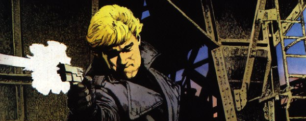

A themed poster series visiting a variety of characters and thrills from the past.
Art by Arthur Ranson
| Story Title | Parts | Pages | w indicates a wraparound coverCovers | Year(s) | Issues | Writer | Artist | Colourist | Letterer |
|---|---|---|---|---|---|---|---|---|---|
Linked to Indigo PrimePart 1: Killing Time | 1 | 1 | 0 | 1993 | 852 | n/a | Chris Weston | <-- | n/a |
Linked to Kola KommandosPart 2: Kola Kommandos | 1 | 1 | 0 | 1993 | 853 | n/a | Anthony Williams | <-- | n/a |
Linked to SkizzPart 3: Skizz 2 | 1 | 1 | 0 | 1993 | 854 | n/a | Jim Baikie | <-- | n/a |
Linked to Dead MeatPart 4: Dead Meat | 1 | 1 | 0 | 1993 | 854 | n/a | Simon Jacob | <-- | n/a |
Linked to The A.B.C. WarriorsPart 5: A.B.C. Warriors | 1 | 1 | 0 | 1993 | 862 | n/a | Kev Hopgood | <-- | n/a |
Linked to FinnPart 6: Finn | 1 | 1 | 0 | 1993 | 863 | n/a | Jim Elston | <-- | n/a |
Linked to Robo‑HunterPart 7: Sam Slade Robo-Hunter | 1 | 1 | 0 | 1993 | 864 | n/a | Cliff Robinson | <-- | n/a |
Linked to The ClownPart 8: The Clown | 1 | 1 | 0 | 1993 | 865 | n/a | Robert Bliss | <-- | n/a |
Linked to Button ManPart 9: Button Man | 1 | 1 | 0 | 1993 | 866 | n/a | Arthur Ranson | <-- | n/a |
Linked to Universal SoldierPart 10: Universal Soldier | 1 | 1 | 0 | 1994 | 868 | n/a | Chris Weston | <-- | n/a |
Linked to Wire HeadsPart 11: Wire Heads | 1 | 1 | 0 | 1994 | 869 | n/a | Mike Hadley | <-- | n/a |
Linked to Anderson Psi DivisionPart 12: Judge Anderson | 1 | 1 | 0 | 1994 | 870 | n/a | Arthur Ranson | <-- | n/a |
Linked to TrashPart 13: Trash | 1 | 1 | 0 | 1994 | 871 | n/a | Nigel Dobbyn | <-- | n/a |
Linked to Strontium DogsPart 14: The Gronk | 1 | 1 | 0 | 1994 | 887 | n/a | Nigel Dobbyn | <-- | n/a |
Linked to Brigand DoomPart 15: Brigand Doom | 1 | 1 | 0 | 1994 | 892 | n/a | Dave D'Antiquis | <-- | n/a |
Linked to DinostyPart 16: Dinosty | 1 | 1 | 0 | 1994 | 893 | n/a | Clint Langley | <-- | n/a |
Linked to Mean ArenaPart 17: Mean Arena | 1 | 1 | 0 | 1994 | 898 | n/a | Anthony Williams | <-- | n/a |
Linked to Armoured GideonPart 18: Armoured Gideon | 1 | 1 | 0 | 1994 | 910 | n/a | Simon Jacob | <-- | n/a |
Linked to SlainePart 19: Slaine | 1 | 1 | 0 | 1995 | 923 | n/a | Greg Staples | <-- | n/a |
Linked to Nemesis the WarlockPart 20: Nemesis | 1 | 1 | 0 | 1995 | 924 | n/a | Clint Langley | <-- | n/a |
| year | episodes | pages |
| 1984 | 0 | 0 |
| 1985 | 0 | 0 |
| 1986 | 0 | 0 |
| 1987 | 0 | 0 |
| 1988 | 0 | 0 |
| 1989 | 0 | 0 |
| 1990 | 0 | 0 |
| 1991 | 0 | 0 |
| 1992 | 0 | 0 |
| 1993 | 9 | 9 |
| 1994 | 9 | 9 |
| 1995 | 2 | 2 |
| 1996 | 0 | 0 |
| 1997 | 0 | 0 |
| 1998 | 0 | 0 |
| 1999 | 0 | 0 |
| 2000 | 0 | 0 |
| 2001 | 0 | 0 |
| 2002 | 0 | 0 |
| 2003 | 0 | 0 |
| 2004 | 0 | 0 |